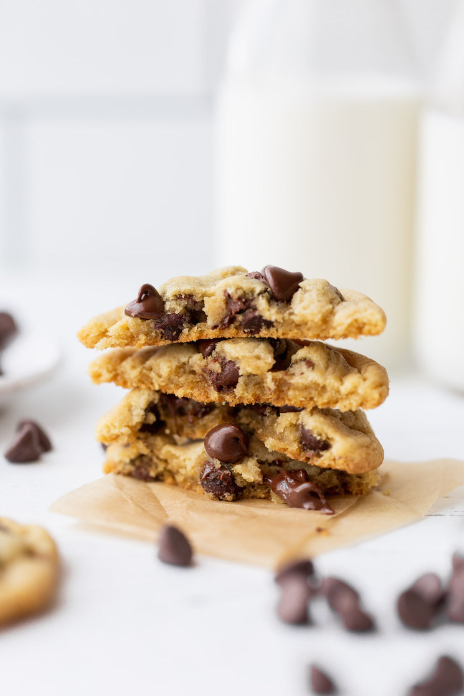

Chocolate Chip Cookies

Source: Live Well Bake Often
Description
These small batch chocolate chip cookies are perfect for when you're craving a cookie, but don't want to make a full batch. This simple recipe yields just 8 to 10 cookies and can be used with several variations too!
Ingredients
- 1/4 cup (60 grams) unsalted butter softened
- 1/4 cup (50 grams) light brown sugar packed
- 2 tablespoons (25 grams) granulated sugar
- 1 large egg yolk at room temperature
- 1/2 teaspoon pure vanilla extract
- 1/2 cup plus 1 tablespoon (70 grams) all-purpose flour (spooned & leveled)
- 1/4 teaspoon baking soda
- 1/4 teaspoon salt
- 1/2 cup (90 grams) semi-sweet chocolate chips
Steps
-
Preheat the oven to 350°F (177°C). Line a large baking sheet with parchment paper or a silicone baking mat and set aside.
-
In a medium-sized mixing bowl using an electric mixer, beat the butter, brown sugar, and granulated sugar together for 1 to 2 minutes or until well combined.
-
Mix in the egg yolk and vanilla extract until fully combined, stopping to scrape down the sides of the bowl as needed.
-
Add the flour, baking soda, and salt and mix until just combined. Then, mix in the semi-sweet chocolate chips on low-speed until fully incorporated into the cookie dough.
-
Cover tightly and transfer to the freezer to chill for 10 minutes.
-
Using a 1.5 tablespoon cookie scoop, scoop the cookie dough onto the prepared baking sheet, making sure to leave a little room between each one.
-
Bake for 10 to 12 minutes or until the edges of the cookies are lightly golden brown and the tops are set.
-
Remove the cookies from the oven and allow to cool on the baking sheet for 5 to 10 minutes, then transfer the cookies to a wire rack to cool completely.